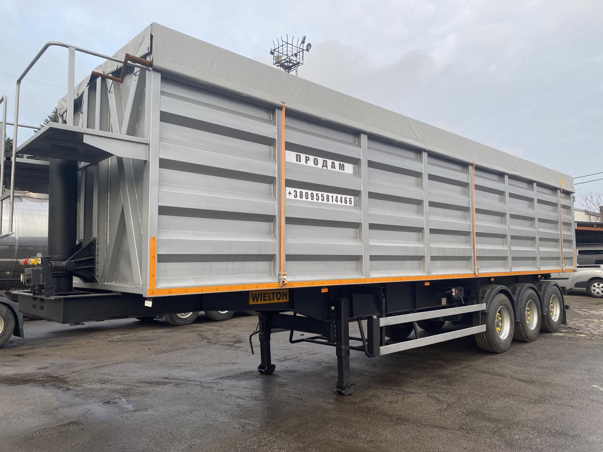

Ремонт, обслуговування та виготовлення напівпричепів
У GOLDEN GRUZ ми надаємо широкий спектр послуг з ремонту та обслуговування напівпричепів.
Наша команда висококваліфікованих фахівців здатна виконувати ремонт, обслуговування та
виготовлення напівпричепів на замовлення, враховуючи ваші потреби і вимоги. Ми пропонуємо індивідуальний
підхід до кожного клієнта, швидку та якісну роботу.
Про виготовлення напівпричепів
Однією з основних галузей діяльності компанії є виробництво
напівпричепів-самоскидів, які використовуються для перевезення зерна, щебня тощо.
Вони мають спеціальний кузов, який дозволяє зручно та безпечно вивантажувати вантаж.

Крім існуючих моделей напівпричепів, GOLDEN GRUZ також пропонує виготовлення кузовів на
замовлення на шасі клієнта. Це дозволяє задовольнити індивідуальні потреби та вимоги кожного
клієнта. Компанія забезпечує індивідуальний підхід до кожного клієнта, враховуючи його побажання
та вимоги.

Компанія також пропонує виготовлення кузовів на замовлення на шасі клієнта.
Зверніться до
GOLDEN GRUZ для отримання професійних послуг з виготовлення транспортних засобів, що
задовольнять всі
ваші потреби. Компанія надає індивідуальний підхід до кожного клієнта, враховуючи всі його
побажання.
Про обслуговування напівпричепів
Крім виготовлення напівпричепів, GOLDEN GRUZ надає послуги з обслуговування. Компанія встановлює
гідравлічні циліндри відомих брендів, що забезпечують ефективний підйом. Також
проводиться установка ходової частини напівпричепа-причепа (осі), пневматику та
електрику. Компанія також встановлює допоміжні механізми для підйомних осей, автоматичні замки
воріт, люки для вивантаження зерна та обігрів кузова.
Компанія також займається усиленням рам напівпричепів, що дозволяє збільшити їх міцність та
надійність. Для цього використовуються якісні конструкційні сталі. Зварні роботи виконуються
промисловими напівавтоматами у середовищі захисних газів, що гарантує якість і довговічність.
Про ремонт напівпричепів
Також наша компанія займається ремонтом напівпричепів-самоскидів. Основні види ремонту:
- Ремонт приводу коліс, ходової частини, пневматичного або гідравлічного гальмівного механізму.
- Ремонт підвіски, яка може бути ресорною або безресорною, торсіонною, балансувальною.
- Діагностика та ремонт електропроводки для забезпечення роботи габаритних та сигнальних вогнів, а також освітлювальних систем.
- Посилення рами, ремонт підлоги та бортів кузова.
- Ремонт блоку з’єднання з вантажним автомобілем, тестування підйомного механізму, опорних катків.
- Специфічний ремонт холодильного обладнання для рефрижераторних напівпричепів.
- Перевірка та відновлення герметичності цистерни для бензовозів.
- Якісна теплоізоляція для ізотермічних фургонів.
- Діагностика та ремонт гідравліки, підйомників для самоскидних напівпричепів.
Ремонт напівпричепів може включати інші види ремонту, специфічні для різних типів причепів. Якщо
у вас є потреба у ремонті, обслуговуванні, купівлі або виготовленні напівпричепа-самоскида -
телефонуйте нам за номером +380 95 151 5315 або пишіть на пошту goldengruz543@gmail.com.